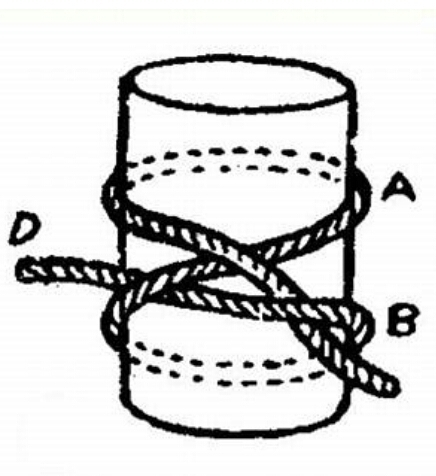
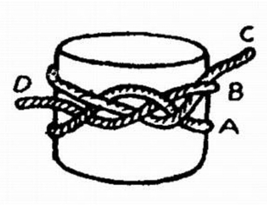
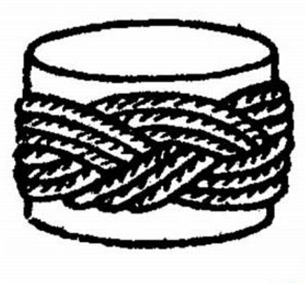

Sampul ini digunakan untuk mengikat sapu lidi
Cara membuat sumpul turki:
1. Sisipkan lingkaran sosok B ke bawah lingkaran sosok A sehingga berada di atasnya

2. Masukan C ke bawah B sehingga dengan demikian akan tampak seperti yang terlihat pada gambar ke-2

3. Akhirnya anyaman C dan D menurut jalinan yang sudah dibuat, sehingga akan menjadi anyaman seperti tampak pada gambar ke-3
